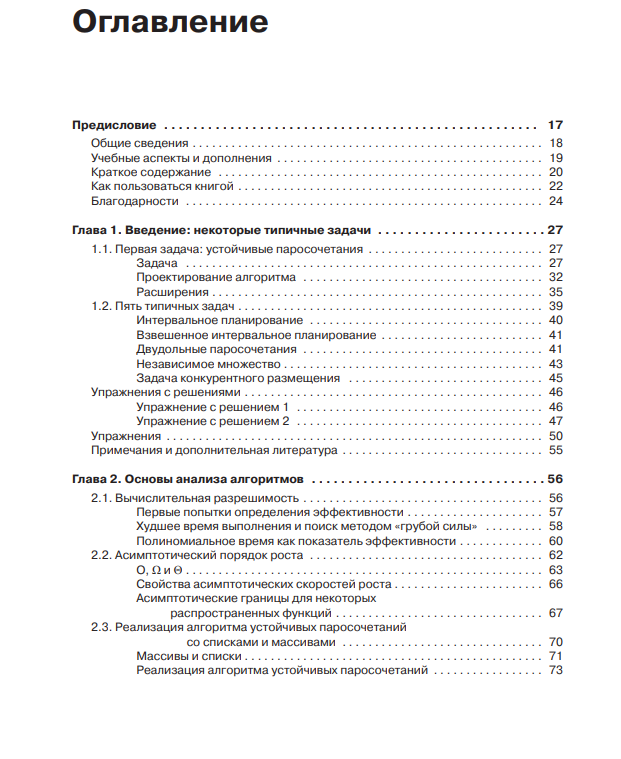
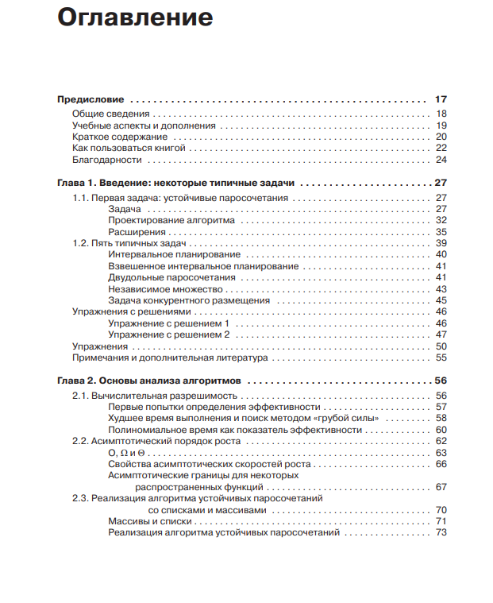

Библиотека
Научно-техническая
Алгоритмы: разработка и применение
Клейнберг Дж., Тардос Е. | 2016
Предисловие
Алгоритмические идеи вездесущи, а широта их применения наглядно проявляется в примерах как из области информатики, так и за ее пределами. Некоторые серьезные изменения стандартов маршрутизации в Интернете произошли вследствие обсуждения недостатков одного алгоритма кратчайшего пути и относительных преимуществ другого. Базовые понятия, используемые биологами для выражения сходства между генами и геномами, имеют алгоритмические определения. Озабоченность, высказываемая экономистами в контексте практической приемлемости комбинаторных аукционов, отчасти обусловлена тем фактом, что особыми случаями таких аукционов являются вычислительно трудноразрешимые задачи поиска. При этом алгоритмические концепции не ограничиваются хорошо известными, устоявшимися задачами; эти идеи регулярно проявляются в совершенно новых проблемах, возникающих в самых разных областях. Ученый из Yahoo!, однажды рассказавший нам за обедом о системе поставки рекламы пользователям, описывал совокупность задач, которые, по сути, можно было смоделировать как задачу нахождения потока в сети. То же произошло в общении с нашим бывшим студентом (ныне консультантом по вопросам управления, занимающимся правилами подбора персонала для крупных больниц), с которым мы встретились во время поездки в Нью-ЙоркДело даже не в том, что алгоритмы находят разнообразные применения. Другое, более глубокое соображение заключается в том, что тема алгоритмов превращается в мощную линзу, через которую можно рассматривать область вычислительных технологий вообще. Алгоритмические задачи образуют ядро компьютерной науки, однако они редко появляются в виде аккуратно упакованных, математически точных вопросов. Чаще они отягощаются множеством хлопотных подробностей, привязанных к конкретному случаю; одни из этих подробностей важны, другие избыточны. В результате алгоритмический анализ состоит из двух фундаментальных компонентов: выделения математически чистого ядра задачи и выявления методов проектирования подходящего алгоритма на основании структуры задачи. Эти два компонента взаимосвязаны: чем лучше аналитик владеет полным арсеналом возможных методов проектирования, тем быстрее он начинает распознавать «чистые» формулировки, лежащие в основе запутанных задач реального мира. Таким образом, при использовании с максимальной эффективностью алгоритмические идеи не просто предоставляют решения четко поставленных задач — они формируют язык для четкого выражения вопросов, заложенных в их основу.
Цель этой книги — донести до читателя этот подход к алгоритмам в форме процесса проектирования, который начинается с задач, встречающихся по всему диапазону вычислительных приложений, использует хорошее понимание методов проектирования алгоритмов и конечным результатом которого является разработка эффективных решений таких задач. Мы будем изучать роль алгоритмических идей в компьютерной науке вообще и постараемся связать эти идеи с диапазоном точно сформулированных задач, для решения которых проектируются и анализируются алгоритмы. Иначе говоря, какие причины заставляют нас искать решение этих задач и как мы выбираем конкретные способы их формулировки? Как мы узнаем, какие принципы проектирования уместны в той или иной ситуации? Исходя из сказанного, мы постарались показать, как выявлять «чистые» формулировки алгоритмических задач в сложных вычислительных областях и как на базе этих формулировок проектировать эффективные алгоритмы для решения полученных задач. Чтобы разобраться в сложном алгоритме, часто бывает проще всего реконструировать последовательность идей (включая неудачные заходы и тупики), которые привели от исходных упрощенных методов к выработанному со временем решению. Так сформировался стиль изложения, не приводящий читателя от постановки задачи сразу к алгоритму и, на наш взгляд, лучше отражающий то, как мы и наши коллеги подходим к решению подобных задач.
Ссылка на книгу
 
